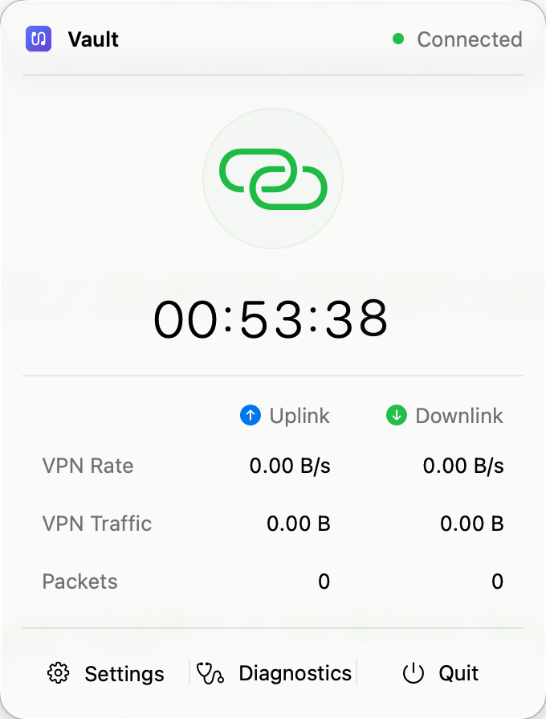
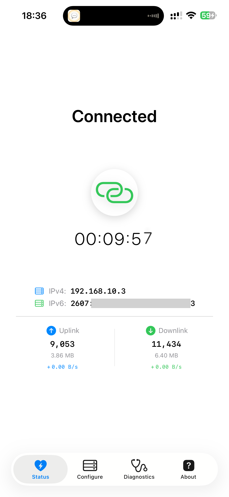
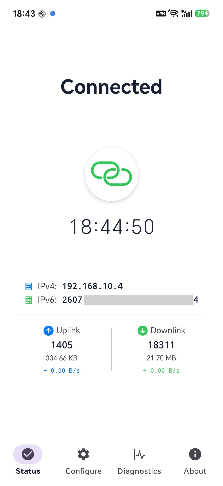

⌘Swift
Apple
iOS / macOSSwiftUINetworkExtensionPacketTunnelProvider
clients/apple
从口袋里的手机，到桌面与服务器。一个 Rust 核心，将你的设备连接到你自己的 VPN。
从 macOS 菜单栏到手机屏幕，查看连接状态、隧道地址与流量统计。



协议只实现一次。平台各司其职。星型拓扑将进入 VPN 隧道的流量，经加密 UDP 连接交由 Linux 服务端转发。
vault-core 统一处理协议、加密、会话状态机、心跳与重连。移动端通过同一个 UniFFI 桥接层接入。
Rust → UniFFI → Swift / KotlinSPAKE2 密码认证密钥交换，结合 X25519 与 HKDF 派生会话密钥。AEAD 加密与滑动窗口处理重放防护。
SPAKE2 / X25519 / AEAD在自己的 Linux 服务器运行 supernode，配置地址池与共享密码。代码以 MIT 许可证开放，架构与协议可供查阅。
Self-hosted / Linux / MITAndroid、macOS 与 Linux 安装包集中在 GitHub Releases。iOS 请使用自己的开发团队从源码构建。
获取 Android 安装包，下载后按系统提示安装。也可以使用下方二维码，在手机上打开。
需要使用 Xcode 自行构建，并通过自己的 Apple 开发团队配置 Bundle ID、App Group 与 Network Extension 签名；不提供公开 IPA。
从最新正式 Release 获取 macOS 应用压缩包，解压后安装。自行构建请参考 Apple 客户端指南。
按用途选择客户端 edge 或服务端 supernode，并选择与 CPU 对应的安装包。其他发行版与 CPU 架构请从源码构建。
不论是接入可信的现有服务端，还是自己部署，按这条路径完成配置、连接与验证。
已有可信服务端？向运营者获取地址、端口和密码。希望自托管？在 Linux 主机部署 supernode，并配置随机强密码、地址池和 UDP 端口。
服务端部署指南 ↗先在下载区准备对应平台的客户端，再填写服务器地址、端口和相同密码。根据服务端分配的 IPv4 / IPv6 配置对应 DNS，首次连接时允许系统创建 VPN。
获取客户端 ↑连接后检查状态与分配的隧道地址，再测试目标网络。Apple / Android 可运行诊断；Linux 可先 ping 服务端隧道地址。最后确认实际路由与 DNS，诊断成功不代表所有流量都被隧道覆盖。
了解诊断范围 ↗以下示例适用于已安装 supernode 软件包与 systemd 服务的主机。创建 /etc/vault/supernode.toml，替换密码并核对地址池，限制配置文件为管理员可读，再启动服务。放行所配置的 UDP 端口；示例使用 9527。
同时需要 IPv4 和 IPv6 隧道时，请配置两个地址池，并确认主机具有对应出口。
完整安装与部署步骤 ↗# /etc/vault/supernode.toml
password = "a-long-random-password"
port = 9527
iface = "vpn"
ipv4 = "192.168.10.0/24"
# ipv6 = "fd00::/96"示例配置 · 请替换密码并阅读服务端转发说明
从数据包到平台适配，沿着代码理解每一次连接。欢迎审阅、构建与贡献。
参与贡献 ↗git clone https://github.com/DigholeNet/vault.gitApple 需要完整 Xcode；Android 需要 SDK、NDK 和 cargo-ndk。普通 cargo build 只构建核心与桥接；Linux 服务端与客户端请使用 --workspace 或指定包。
从系统要求到网络边界，这里回答部署与使用时最常见的问题。
Vault 是自托管软件，作者不运营 VPN 服务。你需要准备自己的 Linux 服务端，或使用可信运营者的服务器。安装包与版本请查看下载章节；暂未发布的平台可从源码构建。iOS 真机构建需使用自己的开发团队与应用标识。
部署与构建指南 ↗支持 IPv4、IPv6 单栈和双栈。服务端至少配置一个地址池，并为需要访问的地址族提供实际出口；客户端按分配结果应用对应的路由和 DNS。未纳入隧道的 IPv4 或 IPv6 流量可能使用本地网络。VPN 断开或服务退出后，Vault 也不保证阻止设备通过本地网络继续联网。部署后请检查实际路由与 DNS 设置。
路由与保护范围 ↗客户端不集成第三方分析或广告服务，也不向软件作者发送使用数据。隧道流量在 supernode 解密后转发，因此应信任服务端运营者。服务端会记录连接元数据；设备 ID、设备名称与平台等握手字段不加密，网络观察者也可能看到。日志分享前请先脱敏。
隐私与数据处理说明 ↗SPAKE2 避免被动抓包后的离线猜密，但仍需使用高熵、独立的随机密码。密码是整个网络的共享信任凭证：持有者可以冒充同一网络内的服务端或客户端。客户端与服务端的时钟也应保持同步，握手时间容差为 ±120 秒。
了解安全模型 ↗不能。Tunnel 探测绑定 VPN 接口或网络，Application 探测使用 App 进程的系统 DNS 与默认路由，两者范围不同。手动启动诊断会向配置的 DNS、TCP、HTTPS 与 ICMP 目标发送探测；结果是连通性信息，不是流量强制保护机制。
诊断范围说明 ↗共享核心每 10 秒发送心跳，连续 30 秒没有认证下行数据时重连，重试间隔从 1 秒指数退避到 60 秒。60 秒是重试间隔上限，不是恢复时限；实际行为还受网络与系统生命周期影响。目前尚无公开的可复现吞吐量、延迟或电量基准，因此不承诺这些性能指标。
恢复参数与测量方法 ↗普通问题请在 GitHub Issues 附上平台、系统版本、构建版本与复现步骤，并先移除密码及日志中的敏感数据。安全漏洞请通过 GitHub 私密漏洞报告渠道提交，不要发布到公开 Issue。
私密漏洞报告说明 ↗ GitHub Issues ↗